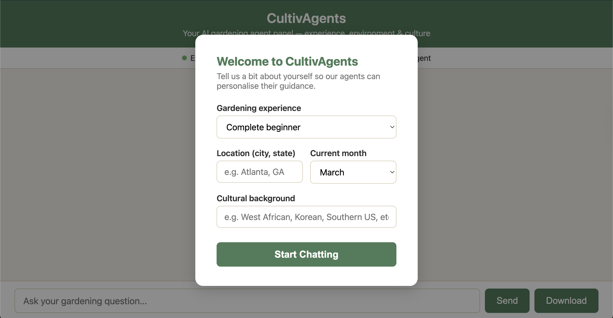
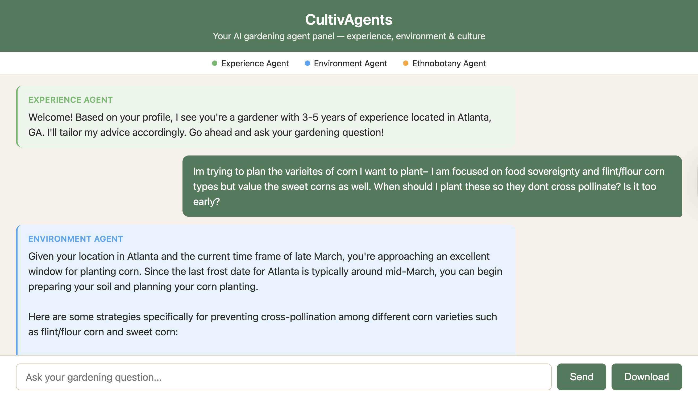

A care-centered, three-persona LLM ecosystem that grounds gardening guidance in your experience, your environment, and your culture.
Gardening has become a restorative practice that enhances well-being and personal agency by providing a sense of accomplishment through the hands-on nurturing of growth. Digital tools have been created to aid in assisting this practice. However, they fail to account for the users' diverse experience levels, environmental context and cultural backgrounds.
This paper introduces CultivAgents, a multi-agent system designed to provide personalized, socio-culturally grounded gardening support. Grounded in ethics of care, our system moves beyond transactional data delivery to foster a strong personal and cultural connection between the user and their environment by having an agent converse with the user on how to care for their plants.
We evaluate the system through three user studies — a formative study with native Hawaiian gardening experts, a workshop with HCI researchers, and a design workshop with members of a local community garden. The formative study provided insights into the efficacy of the cultural agent; the feedback from the HCI researchers was valuable in assessing the overall system design; and the design workshop with the community garden helps to support existing interest of gardening and measure potential enhancement of the gardening experience. Overall, these user studies were conducted to evaluate the efficacy of the LLM system and measure its impact on enhancing one's personalized gardening experience.
Roughly half of new food gardeners quit after their first season. Today's plant-care chatbots deliver portable advice, but they collapse three very different kinds of expertise into one generic voice.
Off-the-shelf LLMs hand out the same advice to a first-timer in a Brooklyn apartment and a fifth-generation farmer — wasting effort and eroding trust when it doesn't fit the ground.
Soil, frost dates, shade canopies, pest ecologies — ungrounded advice plausibly hallucinates recommendations that are wrong for the gardener's actual climate and lease constraints.
Displaced and diaspora gardeners lose more than logistics — they lose tacit knowledge. Generic chatbots can't carry the cultural memory that makes growing food meaningful.
Each agent owns a complementary dimension of personalization. A lightweight LLM selector routes every user turn to the right voices, and the agents respond in short, color-coded rounds.
SelectorGroupChatOn first visit, a short onboarding modal collects four inputs that personalize every agent's system prompt for the rest of the session.

Onboarding. Four inputs — experience level, location, current month, and cultural background — feed every agent's system prompt as structured context.

Color-coded turns. Green (Experience), blue (Environmental), orange (Ethnobotanical), streamed live over WebSocket with Markdown rendering and full-transcript export.
Each agent is a GPT-4o-backed AutoGen AssistantAgent with a domain-specific
persona and a templated system prompt that includes the user profile. At each turn within a
response round, an LLM selector chooses the next eligible speaker (excluding the previous
speaker to ensure diverse perspectives). Each round terminates after k=3 messages and
the conversation history resets to prevent unbounded context growth.
The frontend is a single-page web app that talks to a FastAPI backend over a persistent WebSocket. The system is containerized via Docker and ships as a public, try-it-now demo.
Across a formative study with values-aligned domain experts and HCI researchers, plus a design workshop with community gardeners, we observed measurable lifts in confidence, motivation, and trust — anchored to hyperlocal grounding.
Neighborhood-scale soil and climate detail was the single biggest lever on confidence — moving plants from a digital abstraction to a situated living entity.
Environmental Agent: 4.80/5 location relevance · 4.40/5 seasonal accuracy.
Even users who did not arrive with an explicit cultural profile used the Ethnobotanical Agent to explore ancestral knowledge as a lens for urban food production.
Ethnobotanical Agent: 4.20/5 cultural relevance · 4.00/5 authenticity & respect.
Trust and care emerged from relevant, respectful, actionable guidance — but full companionship will require memory, continuity, and longer-horizon care.
Companionship rating: 2.40/5 · A clear roadmap for continuity.
Onboard with your location, month, and cultural background — and watch three agents coordinate guidance for what you're trying to grow. No install, no signup.
@article{cultivagents2026, title = {CultivAgents: Cultivating Personalized Multi-Agent Systems Towards Food Sovereignty}, author = {Wang, Yiyang and Reilly, Moeiini and Johnson, Britney and Yan, Kefei and Cabral, Alex and Hester, Josiah}, year = {2026}, note = {Preprint}, url = {https://cultivagents.onrender.com/} }